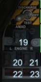

YF-23

19. AMAD fire warning light
ostrzeżenie o awarii pomocniczego generatora energii
20. Left engine FIRE warning light
ostrzeżenie o awarii lewego silnika
21. Right engine FIRE warning light
ostrzeżenie o awarii prawego silnika
22. i 23. Engine burnthrough warning light
ostrzeżenie o pożarze silnika prawego lub lewego w zależności od świecącej kontrolki